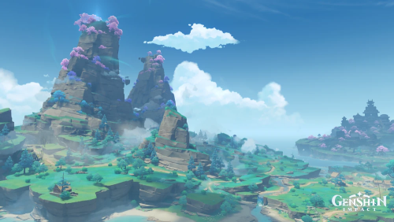
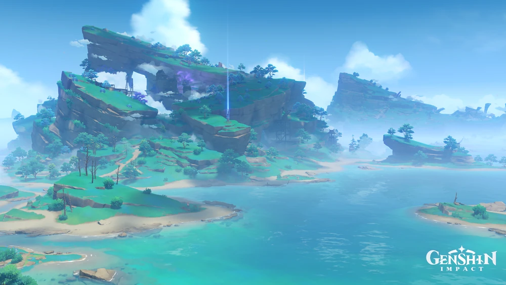
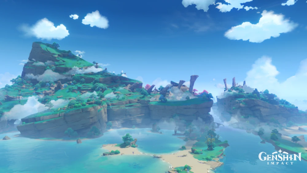
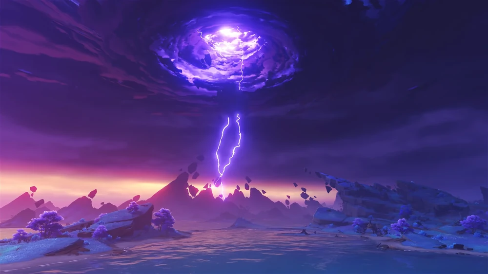
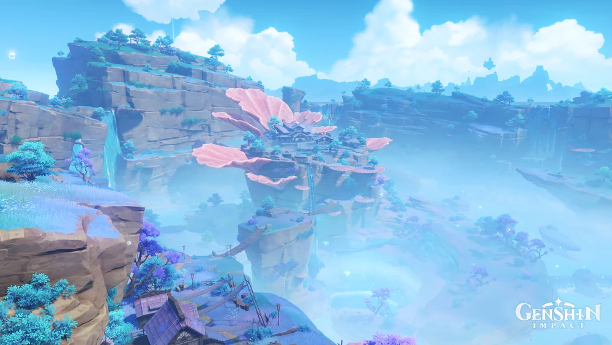
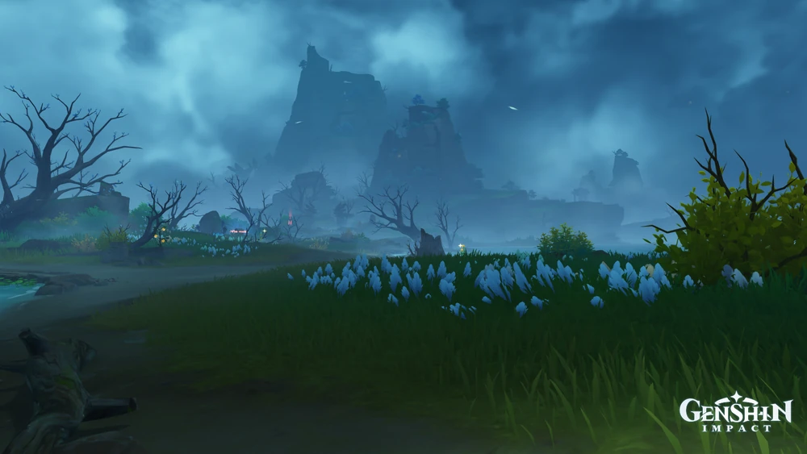

Islands
稲妻の美しい島々

鳴神島
稲妻の地ヘと踏み込もうとすれば、この景色が眼前に広がることだろう。
山頂にそびえるのは鳴神大社と神櫻、そして臨海の稲妻城。

神無塚
神無塚の地形は起伏が険しく、岩壁が切り立っている。重なり合う山と岩の中に建てられているのは、稲妻最大の製錬施設「御影炉心」。
ここでは、稲妻の刀などに使われる玉鋼が次々と生産されている。

ヤシオリ島
大蛇の骸が眠る島。「祟り神」の強い気配を感じられる。

セイライ島
かつて、何かの厄災に見舞われたと思われる島。
一年を通して、荒れ狂う雷が島の中心で轟いている。

海祗島
海祇島には植物と樹木が生い茂っている。
ここの植物は、他の場所とは違う色をしている。

鶴見
濃霧に覆われた神秘なる島。
幾年月もの間、この地に踏み入った者はいない。